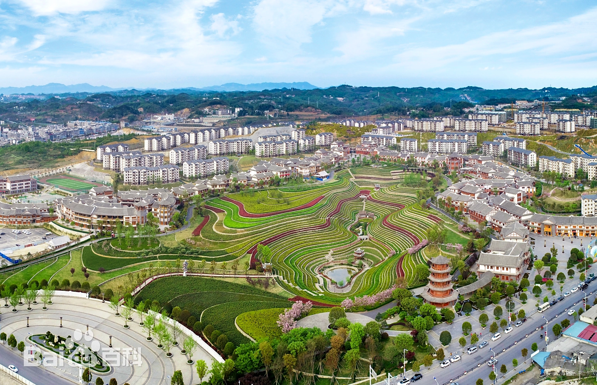

奢香古镇占地面积1522.74亩，总建筑面积约63.4万平方米，位于贵州省毕节市大方县大方城北4公里处，地处G321国道旁边，拥有得天独厚的交通便利。
奢香古镇县城易地移民搬迁社区是在全国政协关心下，恒大集团结对帮扶大方县的精准脱贫项目。奢香古镇拥有全国的城中花海梯田——古彝梯田，加之古色古香的文旅商业街，已成为集“观光、旅游、体验、娱乐、餐饮、购物”于一体，并保留彝族古老风情的特色小镇，2018年底正式成为国家AAAA级旅游景区。
奢香古镇分为安置区、商业区和公建配套区三大区域，核心文旅商业区域从南至北由旅游观光道紧密环接约2.3公里，景色错落有致。
